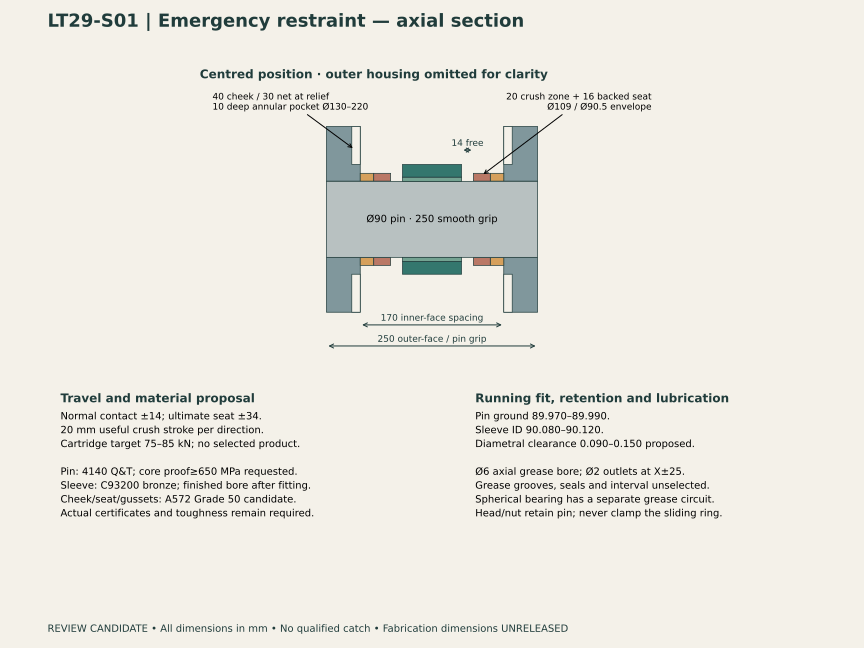
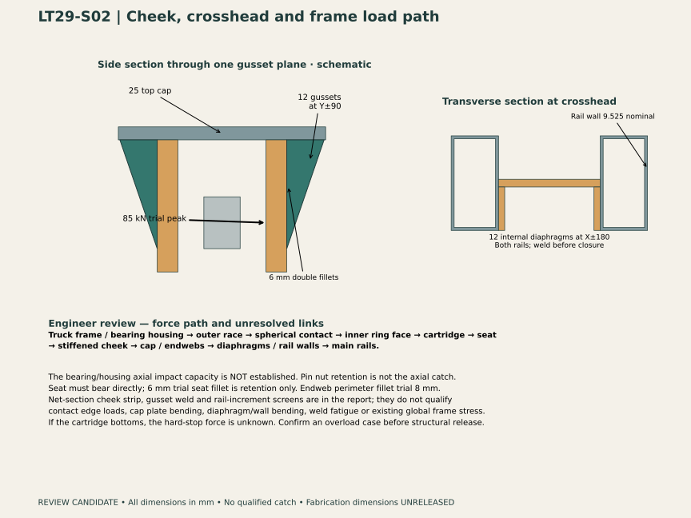
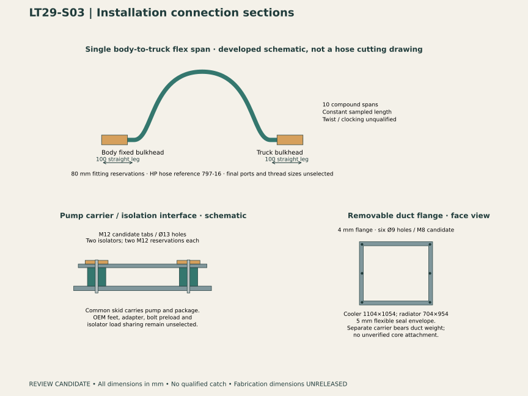

LT29 · ENGINEER / BUILDER REVIEW PACKAGE
Emergency restraint and connection details.
Decision: develop a controlled energy absorber rather than accept the rigid collars as a qualified emergency catch. The proposed annular cartridge is a performance envelope only. A verified force–travel curve and approval of the bearing/housing axial load path are essential before this concept can be accepted.
All geometry, fits, welds and load factors are proposed. This package provides geometry and conditional demand calculations for the running-gear engineer; it does not authorize fabrication, procurement to final dimensions or operation.
Rigid versus energy-absorbing catch
| Arrangement | Geometry | Calculated consequence / open issue |
|---|---|---|
| Retained LT28 rigid collars | ±14 contact;16 mm collars;25 mm cheeks | With the updated 31.24 kN drive proxy and zero initial relative speed, elastic stiffness 10/100/1000 kN/mm gives approximately 149/391/1166 kN peaks. Yielding makes these sensitivities unsuitable as surviving-load predictions. |
| LT29 crush candidate | ±14 first contact;20 mm crush;±34 hard seat;40 mm relieved cheeks;250 mm pin grip | Request 75–85 kN across 20 mm useful stroke:1.5–1.7 kJ nominal area. Single use; replacement after any engagement. Curve onset, overshoot, residual thickness, guidance and retention must be supplied. |
| Hydraulic / remote absorber alternative | Separate guided device and force-transfer bracket would be needed | Potentially resettable, but no selected device or room-qualified installation exists. Do not substitute a catalog energy value for this annular envelope. |
| Ultimate stop | Backed 16 mm seat into stiffened cheek | Provides geometric capture only. Force after cartridge bottoming is unknown and is not capped at 85 kN. Requires its own credible overload case. |
Energy basis: constant axial drive 31.246 kN, from the sleeve-drag sensitivity; worst opposite-side free gap 20.586 mm; estimated two-body reduced mass 3239.7 kg. At contact, E = Fg + ½mv². For a constant plateau C, required crush stroke is s = E/(C − F). This includes continued drive during compression. The chosen speeds are sensitivities, not confirmed failure conditions.
| Initial relative speed | 75 kN stroke required | 75 kN energy margin at 20 mm | 85 kN stroke required |
|---|---|---|---|
| 0 m/s | 14.70 mm | 231.9 J | 11.97 mm |
| 0.1 m/s | 15.07 mm | 215.7 J | 12.27 mm |
| 0.25 m/s | 17.01 mm | 130.6 J | 13.85 mm |
| 0.5 m/s | 23.96 mm | -173.1 J | 19.50 mm |
The displayed 20 mm zone is a required useful-stroke reservation, not a resolved solid crush element. Its residual material must be accommodated; the disappearing volume in the viewer is only a kinematic illustration. If residual packing needs more space, the geometry and energy comparison must be revised. The 75 kN trial fits the 0.25 m/s case with about 3 mm stroke remaining; it fails the 0.5 m/s case. A65 kN lower curve also fails at 0.25 m/s. At 85 kN and 0.5 m/s the remaining stroke is only about 0.5 mm, before tolerances or dynamic overshoot. None of these is an accepted design event. Establish link-failure dynamics, adhesion/braking response, effective mass, temperature, strain rate and an approved energy/load factor.
Complete intended load path
Truck frame and bearing housing → outer race and spherical contact → inner-ring steel face → crush cartridge → backed seat → cheek and gussets → crosshead cap/endwebs → rail walls/diaphragms → main rails. The bronze sleeve and pin nut are not credited as the axial catch. The bearing and housing are a critical unresolved link: radial catalog capacity is not approval for this axial impact, edge loading or race retention.
| Component / screen | Nominal demand | What still needs acceptance |
|---|---|---|
| Pin / sleeve under normal radial load | 58.21 kN radial proxy; pin bending 42.70 MPa; gross combined upper 44.01 MPa; sleeve projected 9.24 MPa | Simply supported Ø90,210 mm cheek-centre span. Gross section only; drilled-hole notches, contact, fatigue, retention and PV duty remain open. |
| Ring / cartridge / seat at 85 kN | 57.54 MPa on assumed full Ø100–109 steel annulus | Actual race face/chamfer and cartridge support must sustain the contact pressure; tilt and local edge pressure are unresolved. |
| Cheek between gusset planes | 163.11 MPa strip bending,180 mm span,109 mm load patch,30 mm net section | 40 mm plate with 10 mm inner-face annular relief. 3D spreading and pocket notch effects require a local model. An unstiffened vertical strip gives 832 MPa, so the gussets are structurally essential. |
| Gusset weld group | 54.48 MPa elastic vector stress | Two 12 mm gussets per cheek atY±90;6 mm double fillets along 210 mm vertical and 72 mm cap edges. Eccentric force included; weld ends/base metal/fatigue unqualified. |
| One crosshead endweb weld group | 13.67 MPa elastic vector stress | 8 mm perimeter fillet trial, actual stepped relief outline; half 85 kN axial plus half maximum normal radial proxy. Assumed equal sharing; cap bending and transfer stiffness require 3D review. |
| Each main rail — incremental catch only | 42.5 kN axial;7.327 kN·m pitch moment; incremental stress 16.22 MPa | Nominal 304.8×152.4×9.525 box. Add existing gravity/braking/global frame stress; verify wall bending, buckling, diaphragms, splices and end reactions. |
| Internal diaphragms | 12 mm plates atX±180 in both rails,133.35×285.75 internal envelope | Install before rail closure. Welding access, actual section dimensions, drainage and full weld/load path must be reviewed. |
No allowable stress, safety factor or fatigue acceptance is claimed. The 85 kN screens are a selection target, not a bound on a failed or bottomed cartridge. SheetS02 and the interface CSV identify assumed force directions and moment datum; blank vector fields mean unknown, never zero.
Pivot specification for review
| Item | Proposed requirement |
|---|---|
| Pin material | SAE4140 Q&T candidate; request certified core 0.2% proof≥650 MPa with toughness at service temperature, heat treatment and surface inspection. No material acceptance. |
| Sleeve material | C93200 continuous-cast bronze candidate to ASTM B505/B505M; certify grade and assess PV, wear, lubrication and bore interference. |
| Pin limits mm | [89.97, 89.99] |
| Sleeve finished bore mm | [90.08, 90.12] |
| Diametral running clearance mm | [0.09, 0.15] |
| Thermal clearance change example mm | 0.0216 |
| Outer fit | Proposed sleeve OD = measured bearing bore +0.015 to +0.035 mm diametral interference; supplier must approve inner-ring expansion/internal-clearance change. Finish ID after fitting. |
| Finish | Proposed shaft Ra≤0.4µm; sleeve bore Ra≤0.8µm; roundness 0.015mm, fitted coaxiality 0.03mm, cheek-axis positionØ0.10mm, cheek parallelism 0.05/210mm. Workshop capability and GD&T datum scheme to confirm. |
| Lubrication | Protected remote fitting → Ø6 blind axial bore → Ø2 radial outlets at X±25 → sleeve running interface. Feed groove/seal/debris control and grease compatibility unselected. Spherical-bearing grease circuit separate. No grease interval until duty and temperature defined. |
| Welds | Candidate A572Gr 50 cheeks/gussets/diaphragms. Trial 6mm double fillets at cheek/gusset/cap;8mm continuous endweb/rail perimeter;6mm seat retention. Diaphragm 6mm perimeter before rail closure. Qualified WPS/PQR, filler matching, preheat, fit-up, inspection and fatigue category required. No welding to 4140 pin, bronze sleeve or bearing races. |
| Sequence | Fit crosshead and cheeks in common datum fixture; weld balanced sequence under approved WPS; inspect and finish/line-bore after welding; verify bore axes and face positions; fit sleeve and finish ID; grease and demonstrate free slide; set axial pin retention without clamping floating ring; record gaps and cartridge lot/curve. |
The thermal example changes diametral clearance by 0.0216 mm for an assumed common 40 K rise and bronze/steel expansion 18/12 μm/m/K; unequal temperatures may behave differently. It is not a verified thermal clearance. Provide material certificates, pin heat-treatment/straightness records, fitted sleeve inspection and a lubrication/contamination plan.
Travel tolerance and clearance
| Item | Conditional result |
|---|---|
| Inherited link dimensional corners | Seven bounded dimensions ×128 corners ×1,008 front/rear poses. Maximum nonlinear effect 0.797 mm; common pivot datum. |
| Manufacturing allocation | Link effect +cheek location 0.25 +seat width 0.10 +half ring-width 0.05 +cartridge free length 0.20 =1.397 mm. All proposed. |
| Operating allocation | Wear/endplay 0.50 +thermal 0.312 +relative elastic 1.00 +mapping 0.05 =1.862 mm. Not validated life/thermal/structural predictions. |
| Normal soft-contact margin | 14 −6.586 archived motion −3.259 total stack =4.155 mm. After additional 2 mm review reserve:2.155 mm. |
| Hard-stop stroke | Nominal 20 mm useful crush. Actual residual cartridge thickness, dimensional tolerances and deformation reduce available stroke; supplier curve/envelope required. |
| Cover-fastener interference resolved | The initial 30 mm cheek conflicted with cap bolts at−34 mm. New 40 mm cheek has 10 mm annular reliefØ130–220, retaining 30 mm net plate. |
| Exact local recheck | 21 front-pivot states: seven normal/curve/governing poses plus both±34 mm frozen-angle translations. No checked intersections. Rear symmetry inferred; full failure dynamics and continuous motion not covered. |
The prior 4.36 mm remains conditional. The new 4.16 mm includes an additional cartridge-length allowance; it is not a measured margin. The fixed-pose tolerance stack is not coupled to friction, elastic deflection or post-failure dynamics. No hard-stop overload or entire-vehicle emergency sweep is cleared.
Connection interfaces and maintenance
| Interface | Developed detail | Remaining input / attachment hold |
|---|---|---|
| Main pressure hoses | 797-16 family reference:25 mm ID,35.7 mm OD,165 mm minimum bend radius,1.74 kg/m;42 MPa catalog hose rating. 45 mm routing envelopes retained. | A catalog family is not a selected hose assembly. Confirm operating/relief pressure, fluids/temperature, approved hose/fitting pairing, crimp spec and full assembly pressure test. |
| Body-to-truck transition | Ten single compound flex spans, replacing 20 yaw/suspension segments. About 1.10 m each;100 mm straight end legs;80 mm ferrule reservations. Minimum sampled HP radius 189.30 mm. | Polyline length constant to numerical precision in 504 poses; no mechanics, torsion/clocking, pressure expansion, hose-to-hose, chafe or failure-travel approval. Final leads and bulkhead supports remain unselected. |
| Fittings and ports | Twenty end-fitting/ferrule envelopes. Propose face-seal serviceable connections where OEM ports permit; identifyA/B/case drain separately. | Exact thread, adapter, swivel orientation, seal and wrench envelope await pump/motor port drawings. Never select threads by envelope size. |
| Line clamps | Thirty split-clamp envelopes; mounting feet bridge smaller-line height to 12 body support rails. Six stations 3575…8075,900 mm pitch. | Liners, actual clamp bases/bolts, vibration and allowable span to be selected. Base plates bear on running boards; boards and underlying brackets have no accepted load rating. Clamps are not credited as hose burst/pressure-end restraints. |
| Pressure-end load | At 42 MPa and 25 mm ID, pA≈20.6 kN is an illustrative single-end pressure thrust. This is not the system pressure or net rack load. | Derive vector loads from actual hose geometry and pressure, fitting elbows, supports and surge duty. Light line clamps must not be assumed to carry this load. |
| Pump support | Four removable carrier tabs, Ø13 holes/M12 candidate; two isolator envelopes with two M12 attachment reservations each. Common skid maintained. | Actual pump feet/coupling adapter, isolator stiffness/load sharing, bolt grade/preload and frame attachment unresolved. The 110 kg allowance alone gives 1.08 kN static weight before support mass, offset moments and dynamics. |
| Duct joints | 4 mm removable end flanges: cooler 1104×1054 and radiator 704×954; six Ø9 holes/M8 envelopes each;5 mm flexible-seal reservation. | Carry duct weight on its own cradle. Do not transfer weight or vibration through unverified OEM cores; seal material, thermal movement and final mating flange are supplier holds. |
| Maintenance paths | Pump 650 mm aft then 1200 mm left; cooler 300 mm forward then 1600 mm up. Four continuous box sweeps clear checked installation BREP. | Remove/disconnect listed panels, carrier tabs and duct joints first. Actual fittings, handles, tools, lifting gear, isolation and safe support procedures remain unqualified. |
Route-to-selected-obstacle screen: 12,736,584 pairs over 504 poses, no overlap cases; minimum 32.50 mm. New support/clamp hardware versus moving boxes also has no overlaps. Hollow shell/cab/trim, final pump/manifold leads, rear jumper and coach continuation remain outside this screen. Service sweeps retain the earlier component reservation boxes and selected exact shell/support solids, with LT29 connection solids added.
Mass, suspension and supplier-dependent attachments
| Item | LT29 result / hold |
|---|---|
| Base mass | 16,130.225 kg; change+58.204 kg. New pivot steel added; connection masses drawn once from services reserve. |
| Services / oil | 170.274 kg services reserve remains. Line oil stays inside 86 kg total-system allowance. Explicit fittings/clamps replace the old 15% allowance. Pump/support overlap remains an uncertainty. |
| Movement / load solver | 504/504 converged; straight and both 50 m curve hands. Six mass envelopes, fixed LT23 spring preloads; minimum driver wheel 4.963 kN; maximum slide 6.216 mm. |
| Demand warnings | 300 cases exceed trial adhesion and/or the 5 kN·m brake target. Not authorized performance. Minimum finite rebound gap-0.019 mm remains a mapping discrepancy. |
| Brake attachment demand | Maximum axle torque 9.481 kN·m. No confirmed device torque/pressure/thermal rating, bracket dimensions or brake-control failure response. |
| Suspension bumper attachment | New quasi-static maximum 5.372 kN. Retain the higher archived 5.765 kN envelope pending actual curve. Existing 4 kN/mm trial law is not a supplier rating. |
| Link and rebound attachment | Normal link 22.777 kN; drag sensitivity 31.246 kN. Rebound normal 7.060 kN; drag sensitivity 7.394 kN. Impact/fatigue excluded. |
| Supplier check | Incoming correspondence recheckedOctober 21 local /October 22 UTC. Acknowledgments, distributor routing and system-definition requests only; no new application ratings. No messages sent. |
The reduced model assumes rail contact, rigid structure, equal wheel-force allocation and unselected bumper laws. It does not establish stability, derailment resistance, an operating curve radius, leading-truck vertical suspension or full crank/rod dynamics. Replace the brake and bumper assumptions only after receiving confirmed curves, masses and interfaces, then rerun equilibrium, motion and attachment calculations.
Engineer handoff and release gates
| Owner / interface | Evidence needed to close |
|---|---|
| Running-gear engineer | Define credible link-failure event/speeds/load factors; verify axial bearing/housing path or specify an independent catcher; solve nonlinear impact and post-failure guidance; qualify whole frame and local weld/contact/fatigue paths. |
| Cartridge supplier | Certified 75–85 kN target curve across 20 mm useful stroke or revised design; energy, initial peak, temperature/rate/tolerance/aging behavior, residual thickness, retention, guidance and replacement criteria. |
| Builder / machinist | Accept or revise material/fit/GD&T proposals; WPS, sequence, distortion/line-bore plan; inspection and assembly gauges; accessible grease, hardware tools and removal sequence. |
| Hydraulics / pump supplier | Configured ports, hose/fitting pairing, actual pressures and fluid; clocking/routing acceptance; pump foot/adapter pattern, support and isolator reactions. |
| Brake / bumper supplier | Application-rated torque/pressure/thermal/failure data; bumper force–travel/temperature/rate curve, permitted travel, mounting geometry and attachment reactions. |
Connection sections



Downloadable review evidence
Engineer load/interface CSV (gzip) · 504 load/travel cases (gzip CSV) · Coordinated review summary · Energy, structural screens and specification (gzip JSON) · Tolerance corners and friction probes (gzip JSON) · Mass reconciliation (gzip JSON) · Route checks (gzip JSON) · Exact local restraint checks (gzip JSON) · Maintenance sweeps (gzip JSON)
Full calculation and candidate BREP sources are retained with this revision. The interface CSV provides 1,008 normal pivot records plus two assumed catch directions. Normal vector components and moments not solved by the reduced model are blank; the trial catch rows explicitly state their assumed zeros and datum. No fabricated pass/fail rating replaces missing supplier information.
Primary reference basis
- ACE absorber calculation basis: kinetic energy plus propelling-force work; supplier application inputs are still required.
- Parker GlobalCore brochure,797 table: dimensional, bend-radius, mass and pressure reference for 797-16; not acceptance of a finished assembly.
- Atlas 4140 material guidance and Wieland ConcastC93200: candidate material families; actual certificates, heat treatment and bearing duty must be approved.
- SSAB A572 Grade 50: plate family and toughness inquiry requirement; no welded assembly rating inferred.
- SKF-generated GE100 dimensional sheet: reference envelope only. Axial impact, bronze insert, fitted clearance and face loading require supplier review.